Apex Out Run — Coast-to-Coast Arcade Highway Racer
An Out Run highway simcade built on Pronto: pick a tuned sports car, race sixty-second stages through branching forks from Coconut Beach to five distinct coast-to-coast endings, and challenge friends in live two-seat online or split-screen duels. Latest product brief ↓ · Initial brief ↓
Current State Summary
The app now is a playable Out Run on the deployed page. You start at a title card and get a 3-2-1 grid. Then you drive a four-lane highway through 15 stages, each with its own light, haze and roadside, and choose a branch at every fork against a 75 s clock that each checkpoint extends by 45 s, to live synthesized engine sound and a three-station FM radio. Escape pauses the race. A ranking run takes three initials onto a shared live board, and two people can race a duel on one keyboard or across two browsers over WebRTC/GGRS. On a phone or a tablet it plays by touch.
Played by touch on a phone and a tablet
Results. The owner asked how to play on a phone: there were no controls. Now a phone or a tablet shows thumb controls over the road, and every screen of the game works by tapping, with no keyboard needed.
Left thumb drives. A wide glass pad at the bottom left. Resting a thumb anywhere on it is the throttle; its left and right halves steer, the notch in the middle goes straight, and sliding across steers the other way without lifting. Lift the thumb to coast. The pad's rim glows gold while it drives.
Right thumb brakes and boosts. A tall red BRAKE pedal in the corner and a round orange NITRO button above it and inward, where the thumb arcs. Both light up when pressed.
Pause, and the menus. A glass ❚❚ above the pad pauses the race. The title, lobby and results buttons are plain taps. The high-score initials get ▲▼◀▶ keys around the letters, and the road trip shows a SKIP button.
A phone, flat or upright. The controls sit in the bottom corners. The HUD keeps only the stage, the time, the rival and the speed; the speed moves to the top right so the pedals do not cover it. Held upright the game still plays, with the controls under the road. On a short screen the title card scrolls, so START is always in reach, and the results and the initials sit side by side.
A tablet. Bigger controls, a quarter of the way up the sides where the thumbs rest when it is held. The tablet keeps most of the HUD, all but the panels under the thumbs.
Two players on one tablet. In a duel each player gets a pad and pedals on their own side: gold on the left for the first player, cyan on the right for the second.
Same game underneath. Touch goes through the same input mapper as the keyboard and the gamepad, so a race driven by touch records, replays and races online exactly as one driven by keys. On a desktop nothing changes: no controls show unless the screen is touched.
Checked. A new browser check plays the game on an emulated iPhone held flat and upright and on an iPad: it starts a run, steers, brakes and fires nitro, pauses and resumes, plays to time over, enters initials on the keypad and finds them on the board, and races a duel on the tablet with both clusters at once.
Not built. Vibration: the iPhone's browser has no vibration support, and the game's sandboxing would need a new permission for it.
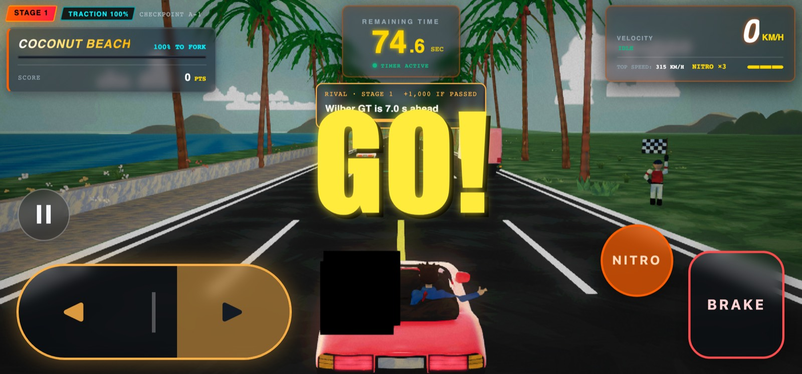
Phone · steering right with nitro
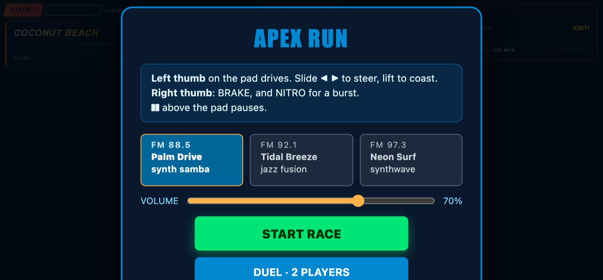
Phone · the title says how to drive
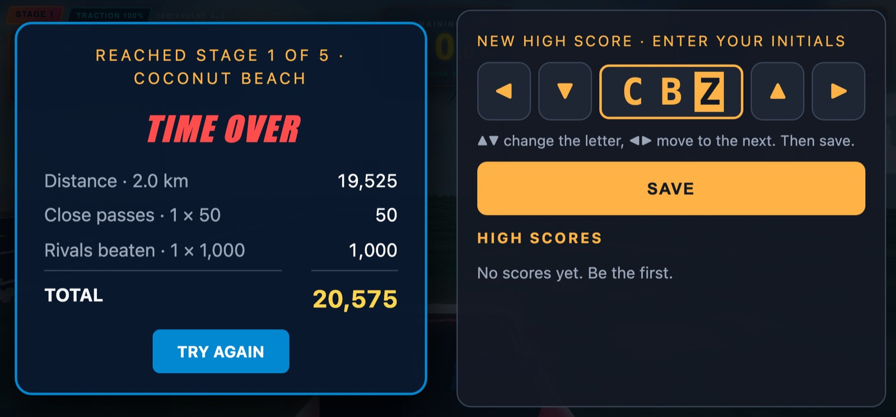
Phone · initials on the keypad
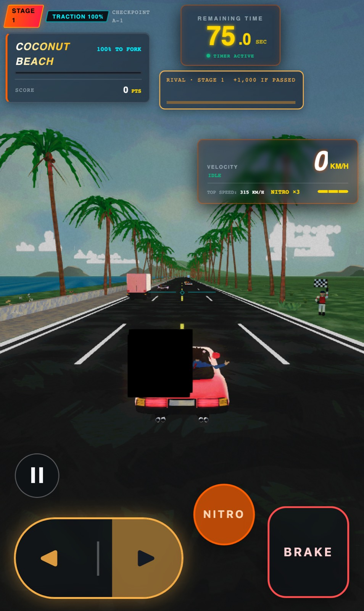
Phone upright · controls under the road
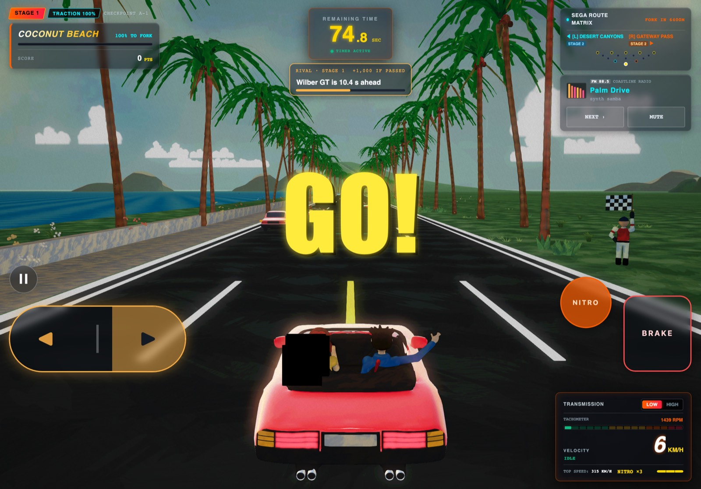
Tablet · bigger controls, most of the HUD
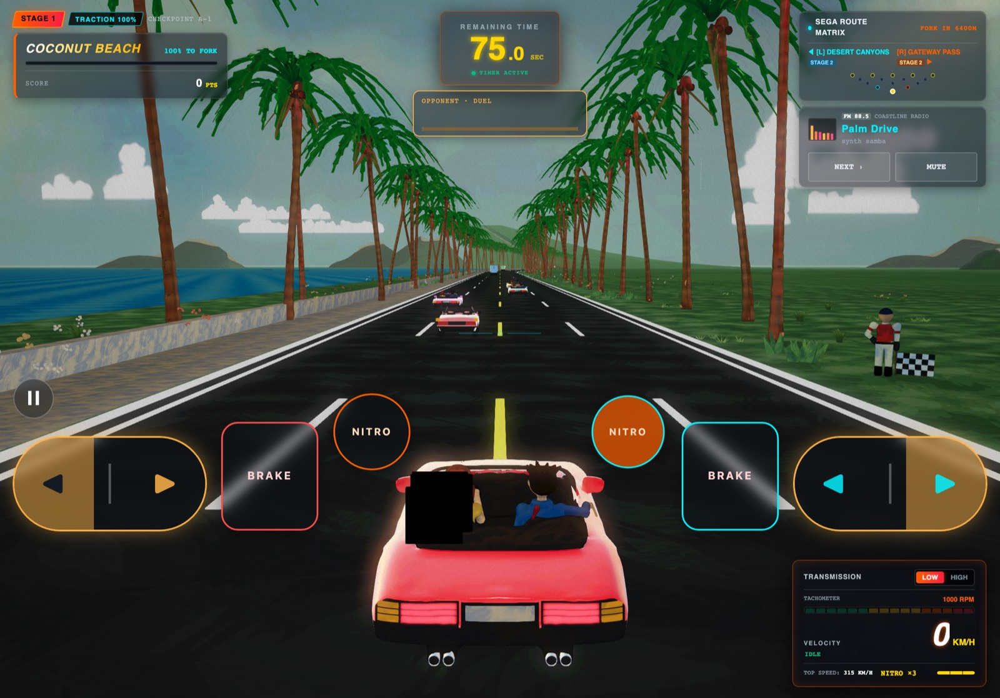
Tablet duel · a cluster for each player
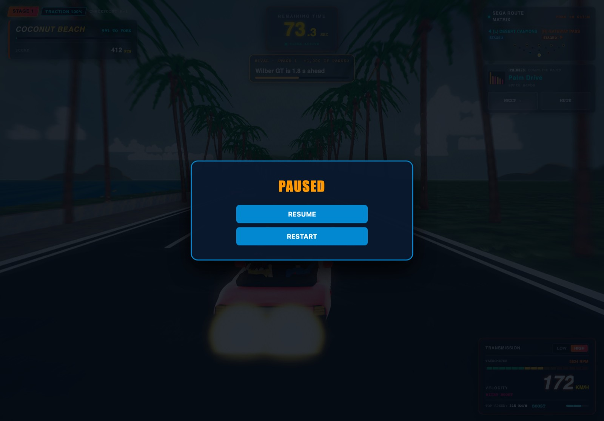
Tablet · paused by touch
The end of the road: each ending's destination, and your road trip
Results. Finishing the last stage no longer drives the car into the void. Past the final arch the road runs on into the ending's own place, the car drives itself in and stops, and then the game replays the player's own run before the results.
The arrival. Each of the five endings has its destination at the road's end: the harbour clock tower, the kasbah, the castle's keep between two gate towers, the colosseum and the airship hangar. The car eases off, brakes and pulls up in front of it, the camera rises to frame the place over the car, and the riders wave. It lasts about eight seconds, with the HUD out of the way. A test drives every ending through the finish and checks, frame by frame, that there is road under the car and land on both sides of it.
The girl waves. The art pack bakes both of her arms onto the wheel. The game now cuts her outer arm out when the car is loaded, so she can lift it and wave as the boy does.
Your road trip. A seven-second clip of each stage raced, around its landmark, cut in three: a helicopter shot, the chase camera's landmark pull, and a camera at the roadside as the car goes by. It is letterboxed, with YOUR ROAD TRIP and each stage's name over it, and the radio keeps playing. Enter or the gamepad's confirm skips it.
It is your run. The clips are rebuilt from the run's own saved milestones, not from an AI driver. Each stage's landmark is now a milestone that saves the race's state, so a clip starts instantly; the inputs saved with the next milestone play it forward. A test checks that every replayed frame matches the original race exactly.
Fixed on the way. When the frame rate allowed the picture to return to full resolution, the screen went black from then on; the road trip's light frames made it happen every time. The title, pause and pit-lane text was half Portuguese; it now reads in English like the rest of the game.
Not changed. Time over goes straight to its results, and an online duel keeps its end card: a duel saves no landmark milestones, so it has no road trip.
Grand Castle · pulled up, both riders waving
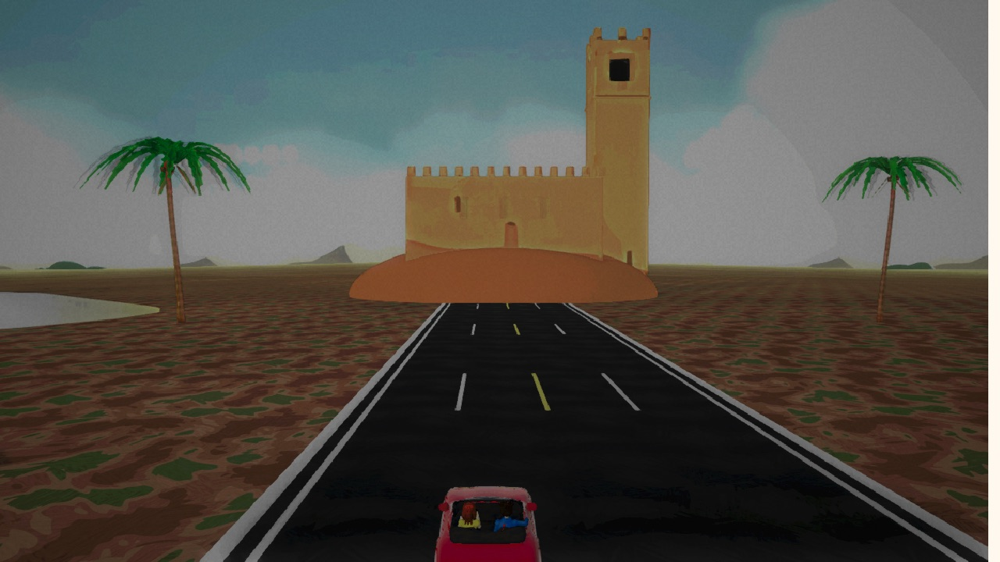
Desert Oasis · the road runs to the kasbah
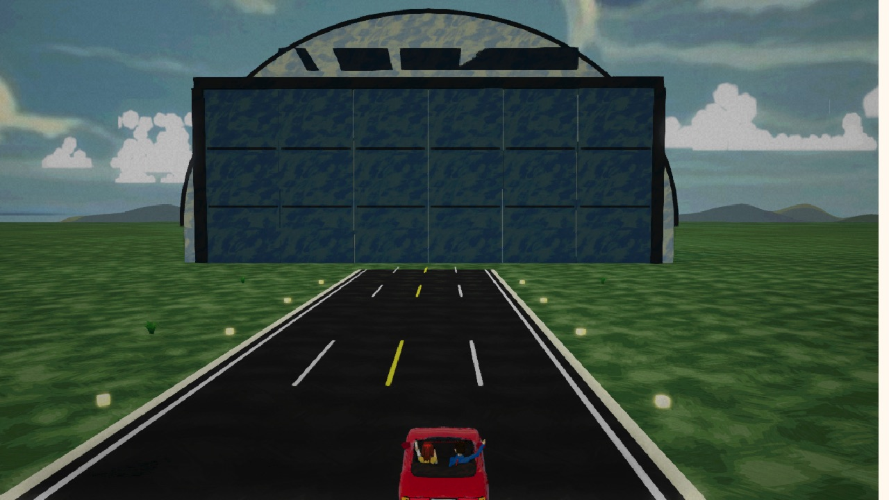
Aerodrome · the hangar's doors face the roadRoad trip · the helicopter, over Ancient Ruins
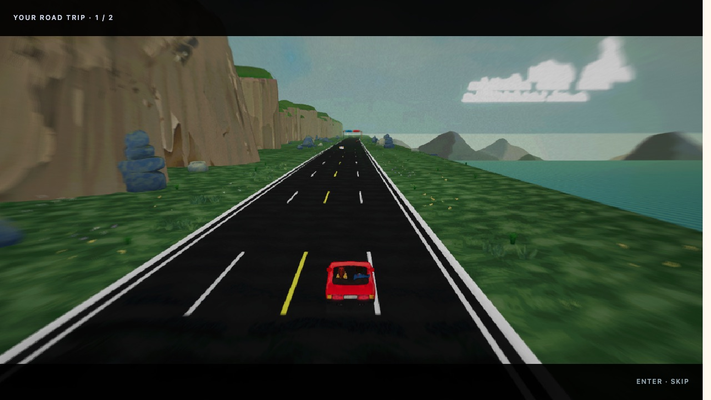
Road trip · the landmark pull, Coastal CliffsRoad trip · the roadside cameraResults · over the car parked at the castle
Two racers online: a lobby, a challenge, and a duel the machine signals and decides
Results. The eighth slice of the kinetic-machine record is built. Two people in two browsers meet in a lobby, one challenges the other on a stage of their choosing, and they race it against each other over a direct connection between the two browsers. The server never carries the race; it introduces the two browsers to each other and then records the result both of them report.
The lobby. The title card's DUELO ONLINE opens it. A racer goes online under a callsign, sees who else is there, picks one of the ten road stages and challenges; the other accepts or declines. It is Truco's lobby, rebuilt as Apex Run's own machines: presence while a tab is open, and challenges that expire after thirty seconds.
The duel machine. Accepting opens a duel on the server. Its rows carry each browser's connection details to the other, so no separate signalling service is needed. During the race each browser reports its milestones — the grid, the start, the finish — and the machine pairs the two reports of each one. If the two agree, the finish is the result. If they disagree, the duel is marked disputed. If one racer goes quiet, the duel is abandoned and the quiet racer is named.
The race over the wire. The arena's race now has an online mode. Each browser predicts the other car's input and rolls the race back when the real input arrives, using GGRS. A milestone is reported only once both browsers' inputs for its frame have arrived, so the two reports can be compared.
The end card. It shows the result as the machine recorded it: you won, you lost, a draw, disputed, or abandoned. The lobby is a click away.
Lobby · Alpine Peaks picked, one racer online
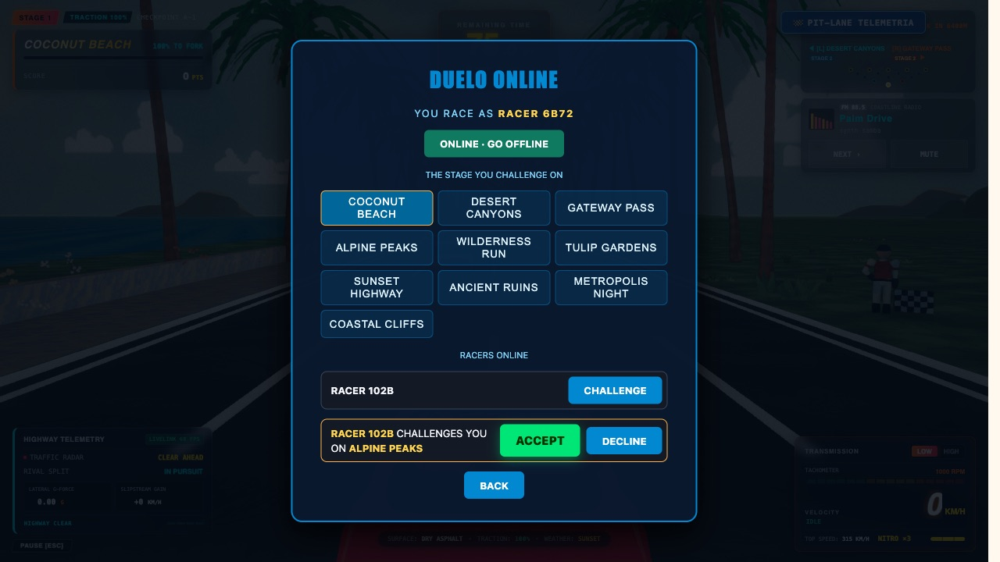
Challenged · the other browser is asked
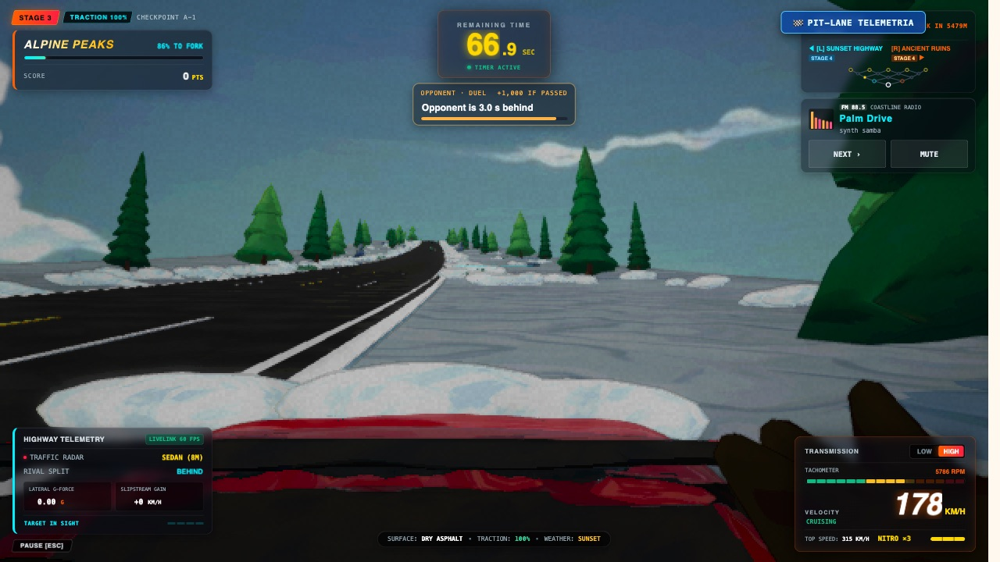
Racing · the challenger's screen
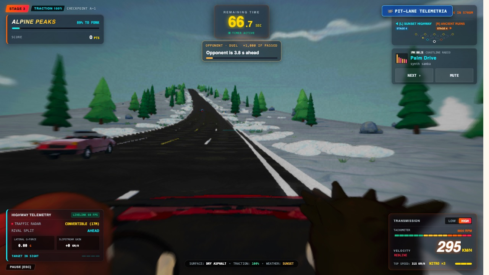
Racing · the other racer's screenResult · as the machine recorded it, one side
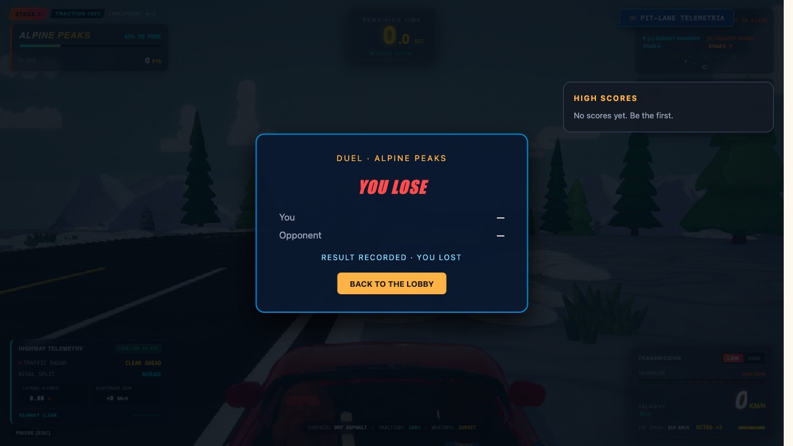
Result · and the other
Apex Run — Brief
Vision. An Out Run highway simcade in the browser, painted as a Ghibli gouache afternoon: a red convertible with a girl at the wheel and a boy beside her, driving coast to coast against the clock. The game is the whole page. A run ends on a shared high-score table with three arcade initials.
Branching route: 15 stages in Out Run's route tree, five per run. A fork at each stage's end picks one of two roads, and the run ends at one of five destinations.
Against the clock: 75 seconds to start, and each checkpoint adds 45. A run ends at a goal or at TIME OVER.
Highway racing: a deterministic 60 Hz drive with drifting, nitro, traffic to slip past for close passes, and one named rival per stage worth 1,000 to beat.
A painted world: every stage has its own light, sky and hero landmark, from Coconut Beach's sea wall to the colosseum. The camera pulls back at the landmarks and drops to the hood in a close pass. Each stage hazes out into the next with road always ahead.
The riders: she drives with both hands on the wheel. He holds the door and waves only when a moment earns it: the start, a close pass, a rival beaten, a checkpoint, nitro.
Shared high scores: the top ten, live for every player, with the ending, time and score. One save per run, and the table refuses scores no run could produce.
Radio and sound: three stations composed in code, and an engine, wind and tyres synthesized live.
The Stitch "Coast 2 Coast" frame is the visual oracle (DESIGN.md, accepted on 2026-10-16): golden-hour light, palm rows, a multi-lane highway into haze, and telemetry at the corners.